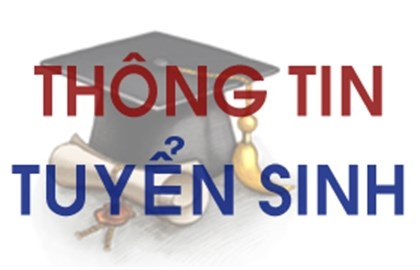

THÔNG BÁO KẾ HOẠCH TUYỂN SINH LỚP 10 THPT YÊN LẠC NĂM HỌC 2022-2023
THÔNG BÁO
KẾ HOẠCH TUYỂN SINH LỚP 10 THPT NĂM HỌC 2022-2023
Căn cứ Điều lệ trường trung học cơ sở (THCS), trường trung học phổ thông (THPT) và trường phổ thông có nhiều cấp học ban hành kèm theo Thông tư số 12/2011/TT-BGDĐT ngày 28/3/2011 của Bộ trưởng Bộ Giáo dục và Đào tạo;
Căn cứ Quyết định số 503/QĐ-UBND ngày 16/3/2022 của UBND tỉnh Vĩnh Phúc về quy định phương thức tuyển sinh vào các lớp đầu cấp THCS, THPT, GDTX cấp THPT năm học 2022-2023 tỉnh Vĩnh Phúc;
Căn cứ Hướng dẫn số 1/HD-SGDĐT ngày 18 tháng 3 năm 2022 về Hướng dẫn thi tuyển sinh vào lớp 10 THPT năm học 2022-2023; Quyết định số 269/QĐ-SGDĐT ngày 14 tháng 4 năm 2022 của Sở GD-ĐT Vĩnh Phúc về chỉ tiêu phát triển giáo dục THPT năm học 2022 – 2023;
Trường THPT Yên Lạc thông báo Kế hoạch tuyển sinh vào lớp 10 THPT trường THPT Yên Lạc năm học 2022-2023 với nội dung như sau:
1. Chỉ tiêu tuyển sinh năm học 2022 - 2023 :
Năm học 2022-2023, trường THPT Yên Lạc được Sở Giáo dục giao chỉ tiêu tuyển sinh lớp 10 là: 520 học sinh, 13 lớp (tăng thêm 01 lớp = 40 học sinh so với năm học 2021-2022).
2. Điều kiện dự thi:
2.1. Có hộ khẩu thường trú hoặc học cấp THCS tại tỉnh Vĩnh Phúc.
2.2. Đã tốt nghiệp THCS.
2.3. Có độ tuổi theo qui định tại Điều 33 của Thông tư số 32/2020/TT-BGDĐT ngày 15/9/2020 của Bộ GD&ĐT.
2.4. Chưa học cấp THPT.
3. Hồ sơ dự thi gồm có:
3.1. Đơn dự tuyển (Theo mẫu do Sở GD&ĐT phát hành).
3.2. Giấy khai sinh (bản sao).
3.3. Học bạ cấp THCS (bản chính).
3.4. Thẻ dự thi (đối với thí sinh diện thi tuyển):
- Học sinh tốt nghiệp THCS năm học 2021-2022: Dùng giấy chứng nhận tốt nghiệp THCS tạm thời (có dán ảnh đóng dấu giáp lai của trường THCS nơi tốt nghiệp) do Hiệu trưởng trường THCS cấp làm thẻ dự thi.
- Học sinh tốt nghiệp THCS các năm học trước: Nộp 01 ảnh 4x6 chụp theo kiểu chứng minh nhân dân, phía sau ghi rõ họ và tên, ngày sinh, nơi sinh trong hồ sơ đăng ký tuyển sinh để trường THPT Yên Lạc làm thẻ dự thi.
3.5. Bằng tốt nghiệp THCS hoặc Giấy chứng nhận tốt nghiệp THCS tạm thời.
3.6. Giấy xác nhận chế độ ưu tiên do cơ quan có thẩm quyền cấp (nếu có).
3.7. Giấy xác nhận do UBND xã, phường, thị trấn cấp (đối với người học đã tốt nghiệp THCS từ những năm học trước, sau đây gọi tắt là UBND cấp xã) không trong thời gian thi hành án phạt tù, cải tạo không giam giữ hoặc vi phạm pháp luật.
3.8. Quyết định của Sở GD&ĐT hoặc các sở, ngành khác thuộc tỉnh: Đối với thí sinh được cử tham gia các Cuộc thi trong học kỳ II lớp 9 năm học 2021-2022
4. Kinh phí tuyển sinh:
Thông báo khi có Văn bản hướng dẫn của Sở GD-ĐT.
5. Đối tượng tuyển thẳng và xét tuyển.
Thực hiện theo Hướng dẫn số 1/HD-SGDĐT ngày 08/3/2022 của Sở GD-ĐT Vĩnh Phúc.